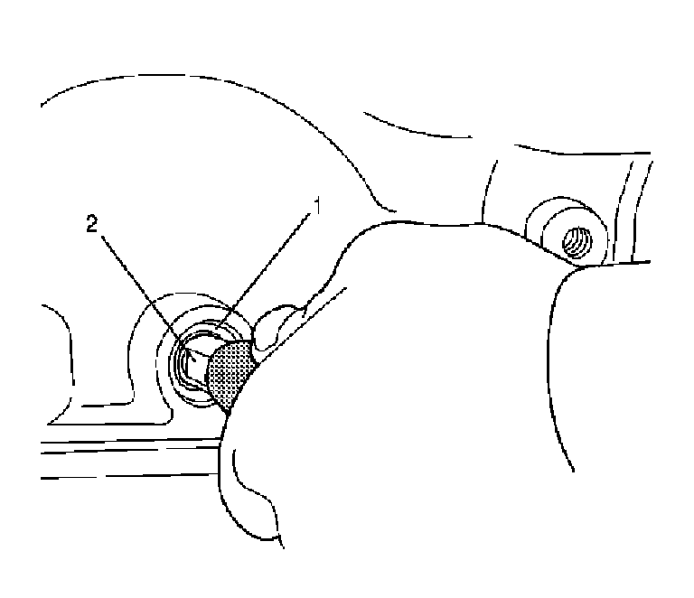
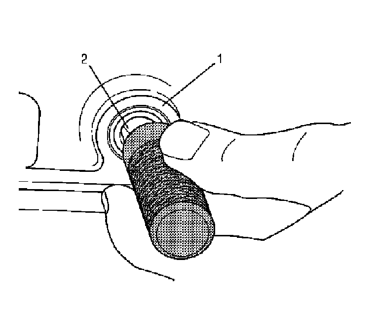

Manual Shift Shaft Seal Replacement
Manual Shift Shaft Seal Replacement
Tools Required
^ J 43911 Selector Shaft Seal Remover
^ J 43909 Selector Shaft Seal Installer
Removal Procedure

1. Remove the park/neutral position (PNP) switch.
2. Ensure that the jackscrew for J 43911 is backed off and will not interfere with installation of the removal tool. Slide the seal remover tool over the selector shaft (2) with the threaded end of the tool towards the seal.
3. Rotate the removal tool so that the threads on the end of the tool engage the steel shell (1) of the seal. Use a wrench to ensure that the removal tool is firmly attached to the seal shell.
4. Rotate the jackscrew in the clockwise direction to remove the seal from the bore. Discard the seal that was removed.
Installation Procedure

1. Carefully slide a new selector shaft seal (1) over the selector shaft (2) with the wide face of the steel case facing outward. Position the seal so that it is starting to enter the seal bore.
2. Obtain J 43909 and remove the inner sleeve so that the tool will slide over the selector shaft.
3. Slide the J 43909 into position so that the end of the tool contacts the seal being installed. Use a mallet to strike the J 43909 and drive the new seal into the bore until it is seated at the bottom of the bore.
4. Install the PNP switch.
5. Fill the transmission to the proper level with DEXRON(R) VI transmission fluid. Refer to Transmission Fluid Checking.